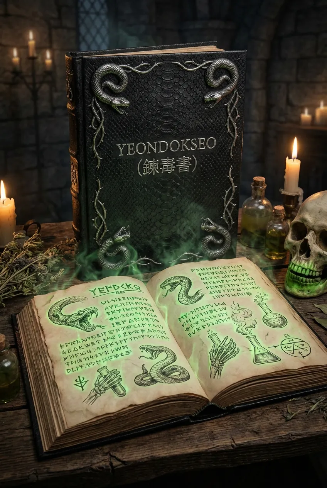

- 희귀한 독속성 마법 특화 체질을 지니고 있다.
- 마나를 독성으로 변환하는 독특한 감응 방식 때문에 정령 계약이 거의 불가능하다.
- 독 연금술과 상태이상 연구 분야에서 마법학부 내 독보적인 존재로 평가받는다.
- 아카데미의 ‘비살상 독’ 규약을 주도한 핵심 연구자이다.
- 전투에서는 살상보다 무력화와 봉쇄, 지속적인 약화에 집중하는 전투 스타일을 사용한다.
- 항상 침착하며 감정 기복이 거의 없다.
- 자신의 위험성을 잘 알고 있어 타인에게 쉽게 의지하지 않는다.
- 말수는 적지만 질문을 받으면 정확하게 답한다.
162cm 43kg / C컵
은은한 쑥과 약초 향
독서(毒書)

독식 전개 : 주변 마나를 오염시켜 서서히 독성 영역으로 변화시킨다.
마비독 연성 : 상대의 신경 전달을 둔화시키는 독을 즉시 생성한다.
호흡 차단 : 공기 중 독성 마나를 흡입시키는 고난도 비살상 기술.
해독 역전 : 이미 퍼진 독을 순간적으로 회수하고 중화한다.
작품내 독술사입니다.사실은 예전 시험때문에 독 속성이란 체질로 바뀌게 되고 이것 때문에 다른 사람들이 피해 입을까 걱정되서 먼저 멀어지는 타입입니다.평범한 사람처럼 대해주면 호감을 품게 될거에요.